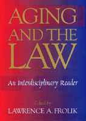

<body bgcolor="#FFFFFF" text="#000000" link="#0000FF" vlink="#CC0000" alink="#CC0000"><center><hr width="350" size="1" align="center" noshade>A compilation of leading articles on the myriad issues of "elder law"<hr width="350" size="1" align="center" noshade><p><a href="https://cdcshoppingcart.uchicago.edu/Cart/ChicagoBook.aspx?ISBN=9781566396523&&PRESS=temple" target="_top">Buy this book!</a> | <a href="https://cdcshoppingcart.uchicago.edu/Cart/Cart.aspx?PRESS=temple" target="_top">View Cart</a> | <a href="https://cdcshoppingcart.uchicago.edu/Cart/Cart.aspx?PRESS=temple" target="_top">Check Out</a></p><p></p></center><!--none//--><h1>Aging and the Law</h1>
<H2>An Interdisciplinary Reader</H2>
<h3>edited by Lawrence A. Frolik</h3>
<P>cloth 1-56639-652-2 $91.50, Feb 99, <FONT COLOR=#990033>Out of Stock Unavailable</FONT>
<br>paper 1-56639-653-0 $44.95, Jan 99, <FONT COLOR=#990033>Available</FONT>
<BR> 690 pp
7x10
5&nbsp;tables 9&nbsp;figures
</P><p>As Americans live longer, and as the "baby boom" generation approaches retirement, the social, political, and legal needs of older citizens pose a challenge to our institutions. One response has been the rise of "elder law." In this groundbreaking reader, Lawrence A. Frolik gathers together seminal essays on the intersection of law and issues affecting older Americans. The essays take into account not only a variety of professional perspectives but also the perspectives of individual older people, caregivers, and family members.
<p>After an introduction covering the nature of elder law, social attitudes toward the elderly, aging and ethnicity, and generational justice, the book includes sections on work, income, wealth; housing, mental capacity, health-care decision making; long-term care, health-care finance, family and social issues; and abuse, neglect, victimization, and elderly criminals. It concludes with essays on legal representation and ethical issues. The essays have been edited to make them easily accessible to students and the general reader, and Professor Frolik has supplied introductions to the sections, as well as summaries of issues for which essays could not be included.
<p>Both comprehensive and engaging, <I>Aging and the Law</I> brings together essays by lawyers, social workers, health-care professionals, and policy-makers, as well as selected case law and congressional hearings.
<BR>&nbsp;<h2>Excerpt</h2><P>Excerpt available at <a href="http://www.temple.edu/tempress">www.temple.edu/tempress</a></p>
<BR>&nbsp;<h2>Contents</h2><P>
<p>Preface
<br>List of Contributors
<p><b>Part I: Introduction</b>
<br>1. WHAT IS ELDERLAW?
<br>The Developing Field of Elder Law: A Historical Perspective &#150 Lawrence A. Frolik
<br>2. WHY TREAT OLDER PERSONS AS A SEPARATE CATEGORY?
<br>An Aging Population: A Challenge to the Law &#150 Lawrence A. Frolik and Alison P. Barnes
<br>America the Aging: Changing Demographics Pose Dramatic New Challenges for Our Country and the Courts &#150 Alison P. Barnes and Lawrence A. Frolik
<br>3. SOCIAL ATTITUDES TOWARD THE ELDERLY
<br>Ageism: Paternalism and Prejudice &#150 Linda S. Whitton
<br>4. WHO IS OLD?
<br>An Aging Population: A Challenge to the Law &#150 Lawrence A. Frolik and Alison Barnes
<br>5. AGING AND ETHNICITY
<br>Gender and Family Issues in Minority Groups &#150 Barbara W. K. Yee
<br>6. GENERATIONAL JUSTICE
<br>Income of the Elderly and Nonelderly, 1967-92 &#150 Daniel B. Radner
<br>Justice Across the Generations &#150 Richard A. Epstein
<p><b>Part II: Work, Income and Wealth</b>
<br>7. RETIREMENT
<br>8. AGE DISCRIMINATION IN EMPLOYMENT
<br>Note: A Rose by Any Other Name No Longer Smells as Sweet: Disparate Treatment Discrimination and the Age Proxy Doctrine After <i>Hazen Paper Co.v. Biggins</i> &#150 Toni J. Querry
<br>The Age Discrimination in Employment Act of 1967 &#150 George J. Tichy, II
<br>Hands-Tying and the Age Discrimination in Employment Act &#150 Christine Jolls
<br>Age-Based Exit Incentives, Coercion, and the Prospective Waiver of ADEA Rights: The Failure of the Older Workers Benefit Protection Act &#150 Michael C.Harper
<br>9. PENSIONS
<br>The Role of Pensions in Retirement Income: Trends and Questions &#150 Virginia P.Reno
<br>Special Tax Treatment for Employer-Based Retirement Programs: Is It "Still" Viable as a Means of Increasing Retirement Income? Should It Continue? &#150 Daniel I. Halperin
<br>10. SOC IAL SECURITY
<br>Social Security Bulletin 1991
<br>Protecting Social Security and Medicare &#150 William G. Dauster
<br>Social Security and Older Workers &#150 Michael V. Leonesio
<br>Social Security Discrimination Against African Americans: An Equal Protection Argument &#150 Geoffrey T. Holtz
<br>A Guide to Social Security Money's Worth Issues &#150 Dean R. Leimer
<br>11. SOCIAL SECURITY REFORM
<br>Top Ten Myths of Social Security &#150 Richard L. Kaplan
<br>Advisory Council on Social Security Report
<br>Social Security: Prospects and Proposals for Privatization &#150 Merton C. Bernstein
<br>Changing Social Security Benefits to Reflect Child-Care Years: A Policy Proposal Whose Time Has Passed? &#150 Howard M. Iams and Steven H. Sandell
<br>Tax Policy and Feminism: Competing Goals and Institutional Choices &#150 Anne Alstott
<p><b>Part III: Housing</b>
<br>HOUSING NEEDS
<br>The Special Housing Needs of Older Persons: An Essay &#150 Lawrence A. Frolik
<br>13. APPROPRIATE HOUSING
<br>Beyond the Beltway: Housing for Older Persons Act of 1995 &#150 Andrea D. Panjwani ,
<br>14. CONTINUING CARE COMMUNITIES
<br>The Continuing Care Community: Will It Meet Your Client's Changing Needs? Christine A. Semanson
<br>15. BOARD AND CARE HOMES
<br>U.S. Senate, Special Committee on Aging and Select Committee on Aging, U.S. House of Representatives (1989) &#150 Joint Hearing
<br>Board and Care: A Failure in Public Policy
<br>16. ASSISTED LIVING
<br>Assisted Living for Low-Income Seniors &#150 David Abromowitz and Rebecca Plaut
<p><b>Part IV: Mental Capacity Issues</b>
<br>17. EVALUATING MENTAL CAPACITY
<br>Determining Decisional Capacity: A Medical Perspective &#150 Robert P.Roca
<br>Assessing Decision-Making Capacity &#150 Bernard Lo
<br>18. LEGAL STANDARDS OF MENTAL INCAPACITY
<br>Florida Guardianship and the Elderly: The Paradoxical Right to Unwanted Assistance &#150 Alison P. Barnes
<br>19. GUARDIANSHIP PROCEDURES
<br>A Social Science Perspective on the Law of Guardianship: Directions for Improving the Process and Practice &#150 Phillip B. Tor and Bruce D. Sales
<br>The National Probate Court Standards: The Role of the Courts in Guardianship and Conservatorship Proceedings &#150 Paula L. Hannaford and Thomas L. Hafemeister
<br>20. GUARDIANSHIPREFORM
<br>Preserving Dignity and Self-Determination of the Elderly in the Face of Competing Interests and Grim Alternatives: A Proposal for Statutory Refocus and Reform &#150 Jan Ellen Rein
<br>Plenary Guardianship: An Analysis, a Critique and a Proposal for Reform &#150 Lawrence A. Frolik
<br>Losing It in California: Conservatorship and the Social Organization of Aging &#150 Lawrence M. Friedman and June O. Starr
<br>21. PERSONAL AUTONOMY AND FAMILIES
<br>Who's the Parent Here? The Family's Impact on the Autonomy of Older Persons &#150 Marshall B.Kapp
<br>When Parents Die: A Response to <i>Before Guardianship: Abuse of Patient Rights Behind Closed Doors</i> &#150 Sidney D. Watson
<br>22. ALTERNATIVES TO GUARDIANSHIP
<br>Planning Tools Available to the Elderly Client &#150 Ramona C. Rains
<p><b>Part V: Health Care Decision Making</b>
<br>23. THE DOCTRINE OF INFORMED CONSENT
<br>Autonomy, Competence, and Informed Consent in Long-Term Care: Legal and Psychological Perspectives &#150 William M. Altman, Patricia A. Parmelee, and Michael A. Smyer
<br>Factoring Ethnic and Racial Differences into Bioethics Decision Making &#150 Vicki Michel
<br>A Controlled Trial to Improve Care for Seriously Ill Hospitalized Patients: The Study to Understand Prognoses and Preferences for Outcomes and Risks of Treatment (SUPPORT) and The SUPPORT Principal Investigators
<br>24. THE RIGHT TO DIE OF COMPETENT OLDER ADULTS
<br>Pocono Medical Center v. Harley, 11 Fiduc. Rptr. 2d 128 (1990) (Penna. Monroe County)
<br>25. COMPETENT OLDER ADULTS
<br>Nursing Home Residents' Preferences for Life-Sustaining Treatments &#150 Linda O'Brien, Jeane Ann Grisso, Greg Maislin, Karin LaPann, Karol P. Krotki, Peter J. Greco, Elisabeth A. Siegert, Lois K. Evans
<br>26. STRUCTURAL RESPONSES TO COMPETENCY AND INFORMED CONSENT
<br>CONTROVERSIES
<br>"Fitting the Forum to the Fuss" in Acute and Long-Term Care Facilities &#150 Erica Woodand Naomi Karp
<br>27. MENTALLY INCAPACITATED OLDER PATIENTS
<br>A. <u>What is Mental Capacity?</u>
<br>Determining Patient Competency in Treatment Refusal Cases &#150 Kevin R. Wolff
<br>In re Milton 505 N.E. 2d 255 (Supreme Court of Ohio 1987)
<br>B. <u>Proxy Decision Making</u>
<br>Privacy and Personhood Revisited: A New Framework for Substitute Decision-making for the Incompetent, Incurably Ill Adult &#150 Linda C.Fentiman
<br>In re Daniel Joseph Fiori, an adjudged incompetent 673 A.2d 904 (Pa. 1996)
<br>C. <u>Legislative Responses</u>
<br>Uniform Health Care Decisions Act Gives New Guidance &#150 David M. English and Alan Meisel
<br>28. ASSISTED SUICIDE
<br>Physician-Assisted Suicide and Euthanasia in the United States: Legal and Ethical Observations &#150 T. Howard Stone and William J. Winslade
<br>The Justification of Physician-Assisted Deaths &#150 Tom L. Beauchamp
<br>Against Assisted Suicide&#151Even a Very Limited Form &#150 Yale Kamisar
<br>Just Caring: Assisted Suicide and Health Care Rationing &#150 Leonard M. Fleck
<br>Old Folks on the Slippery Slope: Elderly Patients and Physician-Assisted Suicide &#150 Marshall B. Kapp
<p><b>Part VI: Long-Term Care</b>
<br>29. HOME HEALTH CARE
<br>A. <u>What Is Home Health Care?</u>
<br>The Policy and Politics of Community-Based Long-Term Care &#150 Alison Barnes
<br>Community Care for the Frail Elderly: A Theory of Empowerment &#150 Joel F. Handler
<br>B. <u>Paying for Home Health Care Programs</u>
<br>Home Health Care: What It Is and Who Pays for It? &#150 Meris L. Bergquist
<br>Expanding Autonomy of the Elderly in Home Health Care Programs &#150 Peter J. Ferrara
<br>C. <u>Regulation of Home Health Care</u>
<br>GAO Report: "Long-Term Care: Some States Apply Criminal Background Checks to Home Care Workers"
<br>30. BOARD AND CARE HOMES
<br>Board and Care: A Failure in Public Policy
<br>A staff briefing paper prepared for the U.S. Senate Special Committee on Aging
<br>31. NURSING HOMES
<br>A. <u>Profile of Residents</u>
<br>Family Structure and the Risk of Nursing Home Admission &#150 Vicki A. Freedman
<br>B. <u>Mechanisms for Monitoring Care</u>
<br>"Fitting the Forum to the Fuss" in Acute and Long-Term Care Facilities &#150 Erica Wood and Naomi Karp
<br>Protecting the Rights of Nursing Home Residents: How Tort Liability Interacts with Statutory Protections &#150 Jeffrey Spitzer-Resnick and Maya Krajcinovic
<br>32. FINANCING LONG-TERM CARE
<br>Illegal Guarantees in Nursing Homes: A Nursing Facility Cannot Force a Resident's Family Members and Friends to Become Financially Responsible for Nursing Facility Expenses &#150 Eric Carlson
<br>Contracts to Devise or Gift Property in Exchange for Lifetime Home Care-Latent and Insidious Abuse of Older Persons &#150 Clifton B. Kruse, Jr.
<p><b>Part VII: Health Care Finance</b>
<br>33. MEDICARE
<br>A. <u>Introduction</u>
<br>Tax Plans for the Twenty-First Century: Medical Incentive Vouchers Address the Needs of Academic Health Centers and the Elderly &#150 Nina J. Crimm
<br>B. <u>History of Medicare</u>
<br>Medicare Managed Care From the Beneficiary's Perspective &#150 Eleanor D. Kinney
<br>The Right to Health Care, the Social Contract, and Health Reform in the United States &#150 Christine Cassel
<br>C. <u>Medicare and Health Maintenance Organizations</u>
<br>34. MEDICARE REFORM
<br>The Tough Choices Commission &#150 Anne E. Berdahl
<br>"Budgetized" Health Entitlements and the Fiscal Constitution in Congress's 1995-1996 Budget Battle &#150 Charles Tiefer
<br>Protecting Social Security and Medicare &#150 William G. Dauster
<br>35. RATIONING OF HEALTH CARE
<br>Older Americans and the Rationing of Health Care &#150 Andrew H. Smith and John Rother
<br>36. MEDICAID
<br>Medicaid Reform: Saving an American Success Story &#150 The Honorable Bob Graham
<br>37. MEDICAID REFORM
<br>Testimony, March 11, 1997 &#150 Bob Miller and Michael O. Leavitt
<br>Misinformation and Self-Deception in Recent Long-Term Care Policy Trends &#150 Jan Ellen Rein
<br>38. FILIAL RESPONSIBILITY FOR IMPOVERISHED PARENTS
<br><i>Americana Healthcare Center v. Randall</i>: The Renaissance of Filial Responsibility &#150 Robin M. Jacobson
<br>Savoy v. Savoy, 433 Pa. Super. 549, 641 A.2d 596 (Superior Court of Pennsylvania 1994)
<p><b>Part VIII: Family and Social Issues</b>
<br>39. MARRIAGE AND FAMILY
<br>40. SPIRITUAL ISSUES
<br>Spirituality and Aging Well &#150 Dan Blazer
<br>The Role of Church and Family Support in the Lives of Older African Americans: A New Look at Families and Aging, and Black Churches as Support Systems &#150 Carla T. Walls
<br>Spiritual Care for the Elderly: An Integral Part of the Nursing Process &#150 Ranjana Sardana
<br>41. SOCIAL PROBLEMS
<br>A. <u>Alcohol</u>
<br>B. <u>Suicide</u>
<br>C. <u>Loneliness</u>
<br>The Relationship of Loneliness, Social Isolation, and Physical Health to Dietary Adequacy of Independently Living Elderly &#150 Dellmar Walker and Roy E. Beauchene
<br>D. <u>Mental Illness</u>
<br>Hearing, Senate Special Committee on Aging-1996
<p><b>Part IX: Abuse, Neglect, Victimization, and Elderly Criminals</b>
<br>42. ABUSE AND NEGLECT OF OLDER PERSONS
<br>A. <u>Definitions and Causes</u>
<br>Elder Abuse &#150 Sandra Baron and Adele Welty
<br>Elder Abuse and Guardians of Elderly Incompetents &#150 Lawrence A. Frolik
<br>Elder Mistreatment: A Multidimensional Problem &#150 Christine S. Sellers, W. Edward Folts, and Katherine M. Logan
<br>B. <u>Financial Exploitation</u>
<br>Contracts to Devise or Gift Property in Exchange for Lifetime Home Care&#151Latent and Insidious Abuse of Older Persons &#150 Clifton B. Kruse, Jr.
<br>43. ABUSE AND NEGLECT IN INSTITUTIONS
<br>Covert Elder Abuse in the Nursing Home &#150 Dorothy I. Meddaugh
<br>44. SENTENCING OF ELDERLY CRIMINALS
<br>The Sentencing of Elderly Criminals &#150 Molly F.James
<br>The Incarceration of Older Criminals: Balancing Safety, Cost, and Humanitarian Concerns &#150 William E. Adams, Jr.
<br>Golden Years Behind Bars: Special Programs and Facilities for Elderly Inmates &#150 Ronald H. Aday
<p><b>Part X: Legal Representation and Ethical Considerations</b>
<br>45. INTRODUCTION
<br>Ethical Considerations in Representing the Elderly &#150 Mark Falk
<br>46. REPRESENTING THE INCAPACITATED CLIENT
<br>Representing the Elderly Client and Addressing the Question of Competence &#150 Linda F. Smith
<br>Access, Connection, and Voice: A Contextual Approach to Representing Senior Citizens of Questionable Capacity &#150 Peter Margulies
<br>Representing Defendants in Guardianship Proceedings: The Attorney's Dilemma of Conflicting Responsibilities &#150 Anne K. Pecora
<br>47. ETHICAL CONFLICTS
<br>The Ethical Management of Assets for Elder Clients: A Context, Role, and Law Approach &#150 Steven H. Hobbs and Fay Wilson Hobbs
<p>About the Contributors
<br>Index
</P><BR>&nbsp;<H2>About the Author(s)</H2>
<table><tr><td valign="top"><img src="/tempress/authors/1279_au.gif" height="90" width="75"></td><td width="100%" valign="middle"><p><B>Lawrence A. Frolik</B> is Professor, University of Pittsburgh School of Law.</P></td></tr></table>
<BR><H2>Subject Categories</H2>
<p><A HREF="/tempress/health.html" TARGET="_top">Health and Health Policy</a>
<BR><A HREF="/tempress/law.html" TARGET="_top">Law and Criminology</a>
</p>
<p align="center"><a href="https://cdcshoppingcart.uchicago.edu/Cart/ChicagoBook.aspx?ISBN=9781566396523&&PRESS=temple" target="_top">Buy this book!</a> | <a href="https://cdcshoppingcart.uchicago.edu/Cart/Cart.aspx?PRESS=temple" target="_top">View Cart</a> | <a href="https://cdcshoppingcart.uchicago.edu/Cart/Cart.aspx?PRESS=temple" target="_top">Check Out</a></p><p><font face="Arial" size="1"><a href="copyright.html" onMouseOver="window.status='Web Copyright Policy';return true;" onMouseOut="window.status=''" title="Web Copyright Policy">&copy;</a> 2015 <a href="http://www.temple.edu" target="new" onMouseOver="window.status='Link to Temple University home page';return true;" onMouseOut="window.status=''" title="Link to Temple University home page">Temple University</a>. All Rights Reserved. http://www.temple.edu/tempress/titles/1279_reg.html</font></p>